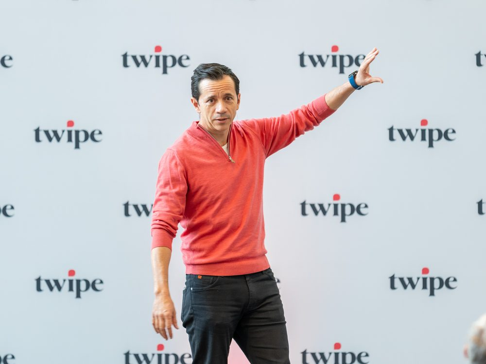
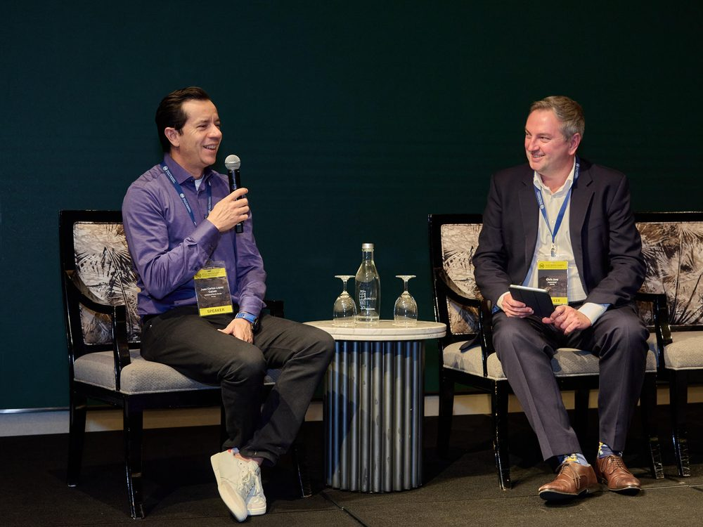
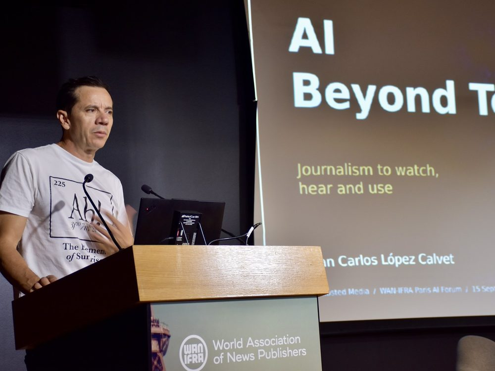
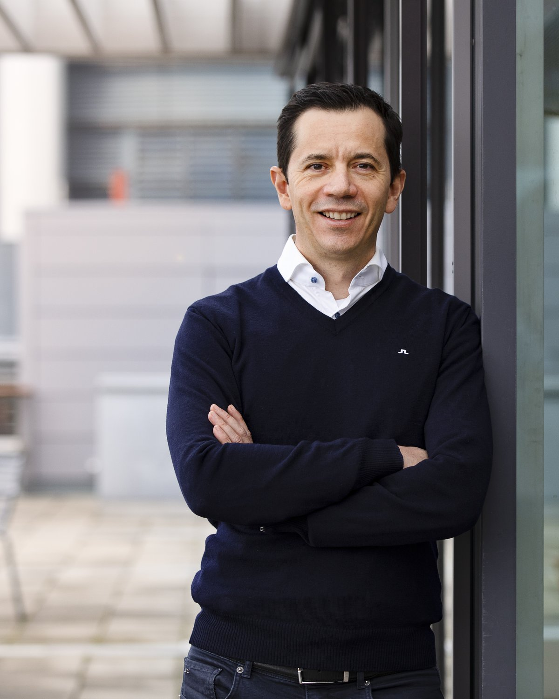
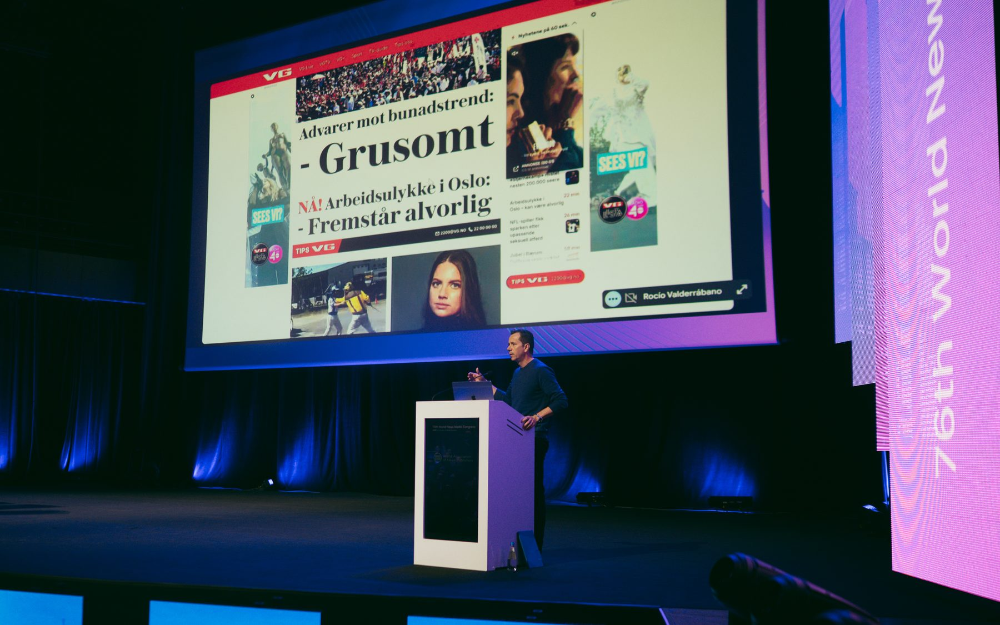

Technology and business transformation executive. 25+ years building and reshaping companies across media, telecom, e-commerce, mobility and energy — from cryptography research and NFC patents to operationalising AI at group scale.
One of the few executives who has taken AI from strategy deck to daily operations at group scale — publisher licensing with OpenAI, enterprise Claude rollout, and an AI Lab shipping newsroom products.
I create P&Ls, not just platforms. Solar energy, home security, e-commerce, IoT ventures — identified, built, and grown to profitability.
MEng in telematics with a cryptography dissertation. Named inventor on patent publications in mobile ticketing, SIM/RFID and service discovery. I speak engineering natively.
Corporate separations, SEK 6.55bn acquisition integration, platform modernisations — delivered without incidents and with the teams stronger afterwards.
"We don't want engagement for engagement's sake — we want informed citizens."Redefining Engagement podcast, 2025
Established Schibsted's strategic publisher partnership with OpenAI — one of Europe's early content licensing deals, creating recurring revenue and a seat at the table on how journalism appears in AI products.
Negotiated Anthropic enterprise arrangements and led the launch of Claude across Schibsted with phased security controls, moving a media group of thousands into daily AI use.
Led the Data & AI workstream of Schibsted's split into Media and Marketplaces. The Pulse platform separation completed without incidents, then re-architecture cut platform costs by ~40%.
Leading shared Data & AI integration with TV4 and MTV following Schibsted's acquisition — architecture, platform reuse and enterprise AI tooling across the enlarged group.
Took an AI article-to-video experiment from the AI Lab into newsroom production, then open-sourced it — covered by Nieman Lab and journalism.co.uk.
Founded RACV Solar and reached profitability in two years; grew Home Security revenue ~20%. Established Telstra Energy with a board-approved market-entry strategy.



The through-line of my career is taking technology that is about to matter and building the business around it before it's obvious. NFC and IoT at Telenor when phones were still dumb. Renewable energy at Telstra and RACV before it was mainstream. E-commerce logistics during the pandemic. And now AI — not as a pilot programme, but as licensing revenue, newsroom products and a group-wide operating model.
I lead through senior specialists and business leaders, and I'm at my best when the learning curve is steep and the mandate is bold.

"Our first principle is to enhance, not replace. Trust is our north star."WAN-IFRA Asian Media Leaders Summit, Singapore 2025

A frequent speaker and workshop leader on AI in media across Europe, Asia and Latin America — WAN-IFRA, INMA, the Nordic AI in Media Summit, NorwAI and the European Festival of Journalism.
Feature built around the Asian Media Leaders Summit keynote in Singapore: Schibsted's AI principles, the three-horizon framework, Videofy and ARIA agents.
Read → Video interview · PodcastLong-form conversation on Schibsted's north-star metrics, AI in journalism, and why informed citizens beat engagement for its own sake.
Watch → Press · Press GazetteQuoted at the World News Media Congress in Kraków on why Schibsted chose to license content to OpenAI and what publishers gain from a seat at the table.
Read → Webinar · WAN-IFRASolo deep-dive on data-driven AI investment decisions and commercial AI strategy in publishing.
View → Talk · Nordic AI in Media SummitPresenting Schibsted's agent-driven video pipeline at the Nordic industry's flagship AI summit in Copenhagen.
View → Conference · INMAOn standardising event schemas to cut costs up to 40%, and keeping token economics honest as models evolve.
Read → Festival · Voices, FlorenceTwo sessions at the European Festival of Journalism & Media Freedom on what's real and what's not in newsroom AI.
View → Open source · VideofyThe AI Lab's article-to-video tool released to the industry — covered by Nieman Lab and journalism.co.uk.
Read →To build the technology, teams and businesses that let organisations thrive in the AI era — and to prove that trust and ambition belong in the same strategy.
The learning curve is steep and the mandate is bold.
I'm translating something deeply technical into a decision a board can make with confidence.
I'm building with people who care — turning specialists into a team that outperforms its size.
Ship AI that trades user trust for short-term metrics.
Hide behind slideware — I build, measure and show.
Stop being hands-on enough to challenge the engineering as well as the strategy.
Independent Board Member, Arbor. Previously Distribution Innovation and Morgenlevering.
Executive Board, NorwAI (NTNU). Steering Board, MediaFutures. Board of Advisors, WAN-IFRA AI in News Publishing.
MEng Telematics Engineering, ITAM — dissertation on elliptic-curve cryptography. Executive coursework in financial analysis, quantitative modeling and disruptive strategy.
Telenor Global Accelerate Program. Named inventor on patent publications spanning mobile ticketing, SIM/RFID and service discovery. Languages: English, Spanish, Norwegian.
Open to CTO and technology leadership roles where AI, data and engineering are the growth engine — not the cost centre.